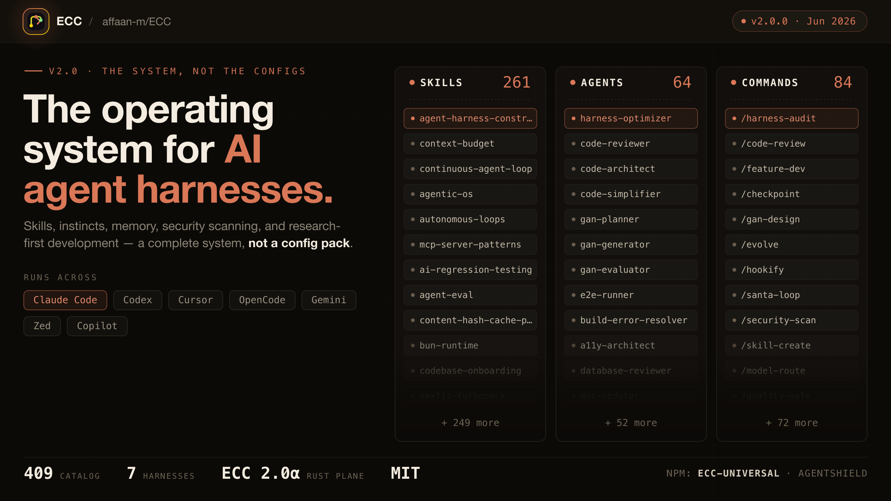

ECC
A free plugin that turns Claude Code into a full engineering team - 261 skills, 63 sub-agents, 79 commands.
Install ECC (Everything Claude Code) and your single Claude Code agent gains a roster of specialized sub-agents: one writes tests, one reviews security, one manages packages, one handles releases - 63 in total, coordinated by a guided installer.

How does it work?
Claude Code is powerful out of the box, but building a complete workflow - testing, security review, package management, releases - means assembling plugins one at a time.
You need a test skill, a security reviewer, a docs generator and a release helper. Each one is a separate install, a separate config, a separate thing to maintain.
You run the ECC installer, pick a profile (minimal, core or full), and it sets up everything.
npx ecc-universal@2.2.3 setup walks you through a guided install: pick minimal (essentials), core (recommended), or full (everything).
Your normal Claude Code prompts. ECC's skills and sub-agents activate based on what you're doing.
Ask Claude Code to review a file and ECC's security sub-agent checks for vulnerabilities. Ask it to deploy and the deployment sub-agent handles the steps.
It adds 261 skills, 63 specialized sub-agents and 79 commands to your Claude Code, organized by category.
- Skills: specific behaviors like test-driven development, code review, documentation generation, security scanning
- Sub-agents: specialized roles that handle focused tasks - one for tests, one for security, one for packages, one for releases
- Commands: shortcuts for common workflows - run all checks, generate a changelog, create a release
The creator won the Anthropic x Forum Ventures hackathon by building his entire platform (zenith.chat) through Claude Code configured with ECC's skills.
One agent that acts like a team - each task is handled by the right specialist.
- A fully equipped agentClaude Code with testing, security, deployment, documentation and 50+ other capabilities installed and configured
- Cross-agent supportECC works with Claude Code, Cursor, Codex, OpenCode, Gemini and Zed - same skills across different agents
- A guided setupThe installer asks what you need and configures only those skills. No manual CLAUDE.md editing required.
What changes for me?
Without it
- Setting up a complete Claude Code workflow means finding, installing and configuring a dozen different plugins.
- Each plugin has its own install process, its own rules, and its own way of conflicting with the others.
With it
- One installer, one setup, 261 skills and 63 sub-agents. Pick a profile and go.
- Skills work across 6 different AI agents, so switching tools doesn't mean re-configuring everything.
How hard is it to try?
Effort
- Run the guided installer:
npx ecc-universal@2.2.3 setup. Pick the 'core' profile for a good starting set. - Open a project in Claude Code and ask it to review a file for security issues - watch the security sub-agent handle it.
- Try a few commands: ask it to run all checks, generate documentation, or set up a testing workflow.
What it takes on your computer
- Space on disk
- No data found for exact size. 261 skills are primarily Markdown instruction files; sub-agents are config, not binaries.
- Memory while it runs
- No measurable overhead beyond what Claude Code already uses. Skills are context instructions.
- Runs on
- Claude Code 2.1+, Cursor, Codex, OpenCode, Gemini, Zed. Needs Node.js 18+ and Git.
Paste this into Claude Code. It runs your safety scan first, then a 10-minute test.
/skillspector https://github.com/affaan-m/ECC If that scan passes: run the guided installer with the 'core' profile, then test 3 different capabilities (security review, testing, and documentation). Report what each sub-agent does and whether the output is useful. 10 minutes max.
Should I?
Great if you...
- You want a complete Claude Code setup without assembling plugins one by one
- You work across multiple AI agents (Claude Code, Cursor, Codex) and want the same skills everywhere
Skip it if...
- You prefer a minimal agent setup and don't want 261 skills in your context
- You've already built a custom workflow that works - ECC may conflict with existing CLAUDE.md rules
Instead, you could look at
- mattpocock/skills27 focused, high-quality skills. Much smaller than ECC's 261, but each one is more carefully tested. A good choice if you want less, not more.
- Custom CLAUDE.md rulesWrite your own rules from scratch. The most control, the most work, and no sub-agents - but nothing you didn't put there yourself.
Is it safe?
- Security advisories: 0GitHub's advisory list, checked Oct 2
- Searches for CVEs, vulnerabilities, malware and scams20 results read, including the national CVE database: nothing found
- Are the stars earned?271K stars, 409 contributors, 3K commits
Watch out for
- 261 skills is a lot. The full profile adds significant context to every agent interaction. The guided installer's 'minimal' profile exists for a reason.
- Named case studies from non-makers are thin. 271K stars and 268 contributors, but published stories of 'I used ECC for my company and here's what happened' are hard to find.
- v2.0 is a recent rewrite. ECC shipped v2.0.0 as a 'cross-harness agent system' - the architecture changed significantly, so earlier tutorials may not match the current setup.
- Potential conflicts with other plugins. 261 skills and 63 sub-agents can conflict with other installed skills or CLAUDE.md rules. The guided installer helps, but check for overlaps.
Who's using it, and for what?
ECC has 271K stars and 268 contributors. Named third-party uses beyond the creator's own projects are sparse - adoption is broad but documented case studies from non-makers are thin.
Affaan Mustafa (creator)
Won the Anthropic x Forum Ventures hackathon at Cerebral Valley, SF, building his zenith.chat platform entirely through Claude Code with ECC's config. First place among 100+ participants, $15K in Anthropic credits.
jabbor (GitHub user)
Used ECC with a local AI model (Omnicoder-9B via llama.cpp) to build a Python-based SQL Server MCP tool in one afternoon. Reported the system stayed on track and self-corrected without prompting.